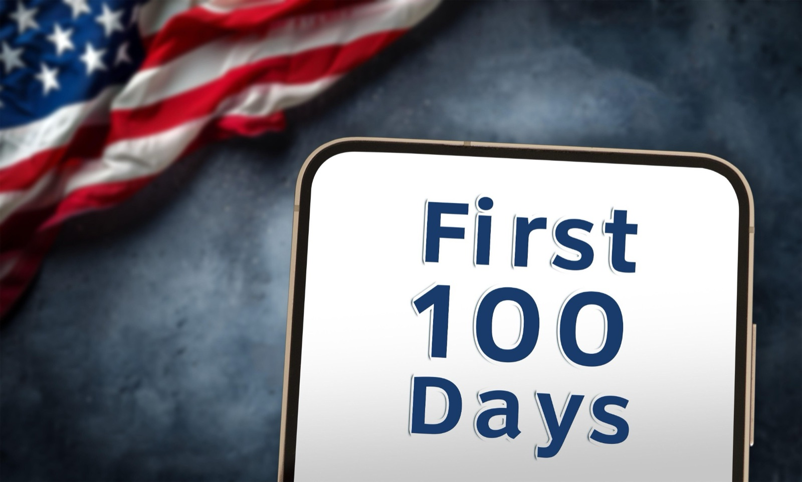

Vision is not the bottleneck. Execution is.
Following the November 2026 general elections, newly elected governors, big-city mayors and county executives are moving from the campaign trail to the mechanics of governance. With 296 state executive offices decided across 43 states, including 36 governorships, and major city and county leadership changes nationwide, hundreds of transition teams are racing a compressed Inauguration Day clock.
History shows that executive transitions rarely falter from a lack of vision. They falter in the translation between policy intent and departmental execution. When administrations change, particularly across party lines or competing ideological wings, incoming leaders inherit legacy workflows, siloed agencies and career civil servants waiting for clear operational direction. Without a disciplined framework in the First 100 Days, early political capital stalls in bureaucracy.
This paper outlines The Momentum Firm's Four-Stage Transition Methodology, a non-partisan operational playbook that converts executive mandates into standardized service delivery, real-time performance visibility and durable institutional adoption.
The 2026 transition landscape: high turnover, shifting mandates
Statewide executive shifts
Voters decided 36 gubernatorial races, 19 of them open seats that guarantee a leadership transition, alongside 31 lieutenant governors, 30 attorneys general and 26 secretaries of state. According to MultiState's post-election tracking, six governorships flipped party control (Alaska, Georgia, Iowa, Nevada, Ohio and Texas), moving the national balance from 26 Republican and 24 Democratic governors to a Democratic majority entering 2027.
City and county leadership changes
Mayoral offices were contested in 22 of the nation's 100 largest cities. High-profile incumbents were unseated in cities such as Los Angeles and St. Petersburg, while open seats and party flips reshaped city halls from Chandler, Arizona, to Reno, Nevada. Open county executive seats in Maryland and county commission chair turnovers in metro Atlanta are bringing new countywide leadership.
Ideological shifts meet a constant workforce
Whether an incoming administration represents a cross-party flip, as with new Democratic governors in Georgia, Ohio and Texas, or an intra-party generational shift, as in Los Angeles, new executives face a delicate organizational reality. Priorities from cost-of-living relief and housing affordability to workforce standards and public safety change overnight, while the career civil service that delivers them stays the same.
Campaign platforms declare what an administration wants to achieve, but agencies operate on budgets, SOPs and legacy IT systems.
Bridging ideological or strategic shifts requires a neutral, data-driven operating system that aligns career staff around measurable service outcomes rather than political rhetoric.
Why traditional transitions stall in the First 100 Days
Transition teams frequently spend the pre-inauguration window focused almost entirely on cabinet appointments and 100-day legislative or executive-order checklists. That work is essential, but three operational blind spots routinely undermine new administrations by Day 60:
- Inheriting unverified baselines. New department heads often assume agencies know their true service backlogs, cycle times and unit costs, only to discover fragmented data across incompatible systems.
- Strategic plans without governance. Administrations publish polished 100-day action plans that lack departmental ownership, clear response-time targets or cross-agency accountability charters.
- Change fatigue among career staff. When new appointees issue top-down mandates without co-designing workflows with frontline managers, career staff view reforms as temporary political theater rather than permanent operational improvements.
The Momentum Firm's 100-Day Transition Methodology
Drawing on direct experience leading high-stakes municipal transitions and enterprise-scale county transformations across metro Atlanta, The Momentum Firm deploys a four-stage operational framework tailored to the First 100 Days.
Stage 1: Rapid Operational Assessments (Days 1–30)
Before rewriting policies or reorganizing departments, incoming leaders need an objective diagnostic of how the government actually runs on Day 1.
- Core actions: Rapid, low-friction operational reviews across priority agencies to map incoming priorities to the existing operational infrastructure, identify service bottlenecks and establish baseline performance metrics without disrupting daily public services.
- Deliverable: An Executive Operational Baseline & Risk Brief giving the Chief Executive, Chief Operating Officer and incoming cabinet clear visibility into hidden backlogs, compliance exposures and quick-win efficiencies.
Stage 2: Strategic Planning & Operational Governance (Days 25–60)
To keep strategic plans from becoming shelf-ware, policy priorities must be translated directly into day-to-day operating rules.
- Core actions: Partner with incoming executives and department heads to translate campaign and policy mandates into multi-year departmental strategic plans, governance charters, standard operating procedures (SOPs) and response-time targets (SLAs) and align departmental resource requests with outcome-based budgeting ahead of the first budget cycle.
- Deliverable: Departmental Governance Charters & Service-Level Standards that assign single-point accountability for every major administration priority.
Stage 3: Data & Executive Visibility (Days 50–80)
What gets measured gets managed, especially when overseeing dozens of distinct agencies and business units.
- Core actions: Convert departmental SOPs and SLAs into real-time executive KPI dashboards using existing enterprise platforms or modern work-management suites, and establish recurring, Stat-style executive accountability meetings.
- Deliverable: An Executive Performance Dashboard & Cadence that lets leadership track service delivery trends, spot agency bottlenecks early and report transparent progress to residents and legislative bodies.
Stage 4: Sustainable Change Adoption (Days 75–100+)
Transformation outlasts the transition window only when career civil servants own the new way of working.
- Core actions: Identify and train internal change champions in each agency, equip frontline supervisors with practical SOP playbooks, and embed continuous-improvement feedback loops so career staff and political appointees operate as one team.
- Deliverable: A 90-to-365-Day Sustainability & Workforce Readiness Roadmap that institutionalizes new service standards across all business units.